EECS / BioE / MechE C106A / 206A · Spring 2026 · Final Project
RoboMath
A UR7e arm that sees an unfinished equation,
solves it with a vision-language model, and writes the
answer back.
Alex Aney · Shu Yuan · Natalie Wang · Yolanda Wei
1. Introduction
Goal
Our goal is to build an end-to-end robotic system that observes an unfinished mathematical equation on the desk, determines the missing solution, and physically writes the answer back to the answer area. Concretely, the robot must (1) perceive the equation and the relevant objects in the scene, (2) reason about the mathematical content of the equation using an external vision-language model, (3) locate and grasp a whiteboard marker, and (4) execute a writing motion that places the solution in the correct location on the board. The whole system is autonomous and does not require any manual intervention.
Why this is interesting
The task looks simple from the outside, but it reqires all perception, planning, and actuation. To make it work, we have to:
Read handwritten equations. Handwritten equations are
noisy, unevenly spaced, and not constrained to a grid. We use an external
vision-language model to read them robustly.
Localize a thin, low-contrast marker. A whiteboard
marker is a small cylinder that the gripper has to find, approach, and
grasp without colliding with the table or the board.
Register two frames precisely. The writing pose has to
be expressed in the answer sheet's frame, not the robot's — so we rely on
ArUco markers on the board for a stable visual reference.
Trace strokes on a real surface. Writing requires
compliant, in-contact motion against an unmodeled surface, with enough
down-force to make a mark but not enough to stall the arm.
Real-world applications
The pipeline is a small instance of a much larger class of problems:
visually-grounded manipulation on flat surfaces driven by a
reasoning model. The same building blocks transfer to:
Automated lab notebooks and chalkboard tutors that can both read what a student wrote and respond on the same surface.
Assistive technology that lets a robot fill in forms, sign documents, or annotate diagrams for users with limited mobility.
Surgical and lab robotics more broadly: any setting where a sensor reads a state, a reasoning model decides what to do, and a manipulator executes a precise motion on a fragile surface.
2. Design
Design criteria
Before choosing an architecture we fixed the criteria the system had to meet:
End-to-end autonomy. From "image of equation" to "answer on the sheet" with no human in the loop.
Position-tolerant. The answer sheet and the marker do not need to be in a fixed, hard-coded position; the system should work for a reasonable range of positions on the table.
Safe. All motion is planned through MoveIt with joint-limit and collision checks; we never command a raw joint trajectory that hasn't been validated.
Architecture
We split the system into four ROS 2 packages that communicate over topics
and services. Each module has a single responsibility, so we could develop
and test them in parallel:
Figure 1. System architecture. The RealSense feeds both the perception node (point cloud + VLM) and the ArUco node. Perception publishes the marker pose on /cube_pose; ArUco publishes the reference frame of the answer sheet; visual_servoing consumes both and commands MoveIt to plan and execute the grasp and writing motions.
Perception — processes RealSense depth + RGB, filters
the point cloud to the workspace, isolates the marker as a cluster, and
runs a vision-language model on the RGB image to read the equation and
produce the missing digit.
ArUco detection — provides a stable reference frame for
the answer sheet. An ArUco marker on the sheet lets us express stroke
coordinates in the sheet's frame rather than the camera's.
Planning & IK — wraps MoveIt's GetPositionIK
and GetMotionPlan services so the high-level pipeline can ask
for "go to this Cartesian pose" without managing joint constraints itself.
Visual servoing — the unified pipeline that
sequences sense → grasp → lift → move to answer sheet → draw, and that
converts each digit 0–9 into a hard-coded sequence of waypoints in the
answer sheet frame.
Trade-offs
External VLM vs. classical OCR. Classical OCR is faster and free
to run, but it is brittle to handwriting style, lighting, and the
symbols used in math. We accepted the external VLM's higher latency and
API cost in exchange for far better recognition robustness and its ability to solve the problem directly.
Hard-coded straight-line strokes vs. learned handwriting. Each
digit is a fixed sequence of waypoints in the board frame. This is
far less expressive than a learned trajectory, but it is deterministic,
reproducible, and easy to debug, which is important when our writing surface and
time budget are limited.
MoveIt over hand-rolled IK. MoveIt adds latency and a
lot of moving parts, but it gives us collision-aware planning and a
validated trajectory format that the UR7e controllers expect.
Impact on robustness, durability, and efficiency
These choices shape how the system performs in a real engineering setting:
Robustness comes from layering a strong perception
front-end (VLM + ArUco) on top of deterministic motion primitives. When
a module fails it fails visibly — bad VLM output is a wrong digit, a
missing ArUco is a planning error — rather than corrupting downstream
modules silently.
Durability of the integration is high because every
module talks over named ROS topics or services. Swapping the VLM
provider, the camera, or the IK backend is a configuration change, not
a rewrite.
Efficiency is bounded by MoveIt planning and the VLM;
the rest of the pipeline runs in real time on the RealSense's native frame rate.
We trade some end-to-end speed for the ability to demo and debug each stage independently.
3. Implementation
Hardware
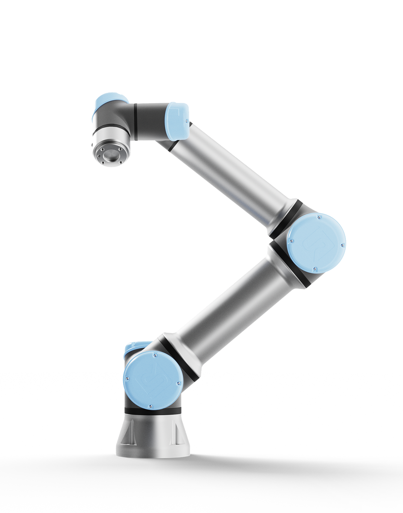
Figure 2. The UR7e arm.
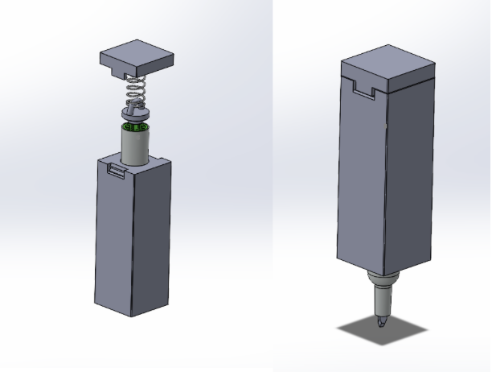
Figure 3. 3D-printed maker box.
Parts list
Part
Purpose
Universal Robots UR7e
6-DoF arm performing all reaching, grasping, and writing motions.
Parallel gripper
End-effector that grasps the whiteboard marker with the marker box.
RealSense Camera
RGB-D camera providing both color frames for the VLM and point clouds for marker localization.
Marker and answer sheet
Writing substrate and the object to be grasped.
ArUco tag
Stable 6-DoF reference frame on the answer sheet for the writing pose.
Maker box
3D-printed box that holds the marker.
Maker stand
3D-printed stand that holds the maker.
Software
The codebase is organized as four ROS 2 packages plus a small interfaces
package. The entire stack is launched by
ros2 launch planning project_stack.launch.py, which brings up
the RealSense, the perception node, the planning/IK node, the
visual_servoing TF broadcaster, the ArUco recognition pipeline, and MoveIt.
Figure 4. ROS 2 topic/service graph. process_pointcloud publishes the marker centroid on /cube_pose and the VLM result on /answer; aruco_node broadcasts the ArUco marker as a TF frame consumed via the orchestrator's TF buffer; project_pipeline calls MoveIt's /compute_ik and /plan_kinematic_path services, toggles the gripper through /toggle_gripper, and dispatches joint trajectories to /scaled_joint_trajectory_controller/follow_joint_trajectory.
perception
process_pointcloud.py subscribes to
/camera/camera/depth/color/points, transforms the cloud into
base_link, crops to the workspace bounds, and filters the
surviving points to publish a PointStamped on
/cube_pose. The same node also receives the latest RGB frame,
encodes it as base64, and calls a vision-language model (OpenAI API) with
a prompt that asks for the missing digit in the equation. The VLM's answer
is republished on a std_msgs/String topic so the orchestrator
knows which glyphs to draw.
planning
Wraps MoveIt's IK and motion-plan services into a node
(ik.py) that downstream code can call without owning joint
state itself. static_tf_transform.py publishes a fixed
transform from the UR7e wrist to the color optical frame so depth points
register correctly with the arm's frame tree.
visual_servoing
project_main.py is the entry point. It runs the unified
pipeline:
Sense. Wait for a /cube_pose message and cache the latest ArUco transform.
Grasp. Open the gripper, plan a pre-grasp pose above the marker via IK, descend, close the gripper, and lift.
Approach the board. Plan a motion to a "ready-to-write" pose expressed in the ArUco frame.
Write. Convert the VLM's digit string into a sequence of pre-defined stroke waypoints (digit 0–9), transform each waypoint into the robot base frame, and dispatch a FollowJointTrajectory action.
Retract. Lift off the writing area.
# Launch the full stack
ros2 launch planning project_stack.launch.py
# Run the unified pipeline
ros2 run visual_servoing project_main --ar_marker 1
# Draw 42 without using the answer from the VLM, used for debugging
ros2 run visual_servoing project_main --ar_marker 1 --digit 42.
How the complete system works (step-by-step)
The RealSense camera streams synchronized color + depth information.
perception filters the point cloud to the workspace bounding box, computes the centroid of the remaining points, and publishes it as the marker pose on /cube_pose.
In parallel, perception sends the latest RGB frame to the VLM with a prompt asking for the missing digit; the answer is cached.
ros2_aruco detects the ArUco maker on the whiteboard and publishes its pose; planning exposes IK and motion-plan services backed by MoveIt.
visual_servoing receives the cube pose, plans a pre-grasp pose ~40 cm above the marker, descends to the grasp pose, closes the gripper, and lifts.
The visual_servoing node transforms each stroke waypoint from the answer sheet (ArUco) frame into the base frame, plans a motion to it, and executes via FollowJointTrajectory.
After the final stroke the arm retracts to a home pose, completing the loop.
4. Results
What the system did
The system was able to solve math expressions with answers being integers between 0 and 99. Below are some examples of the system's performance. The video demonstration is at the top of the page.
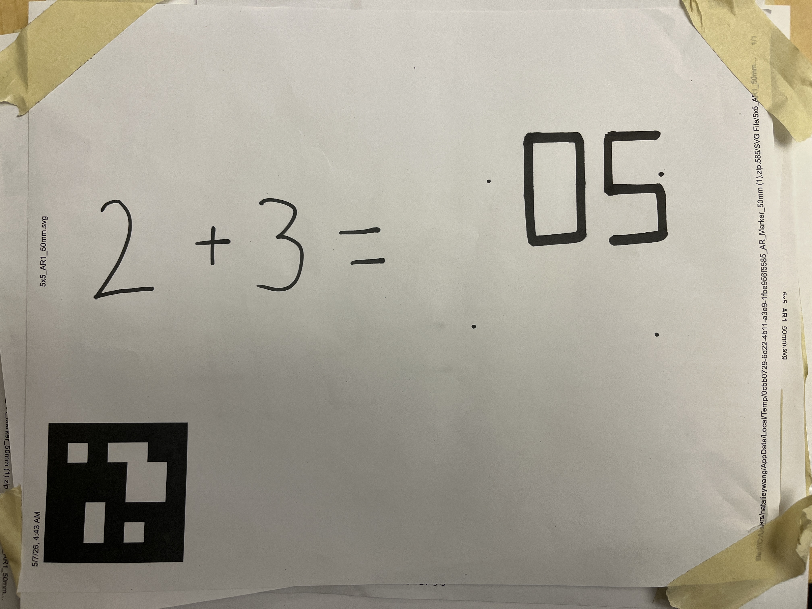
Figure 5.
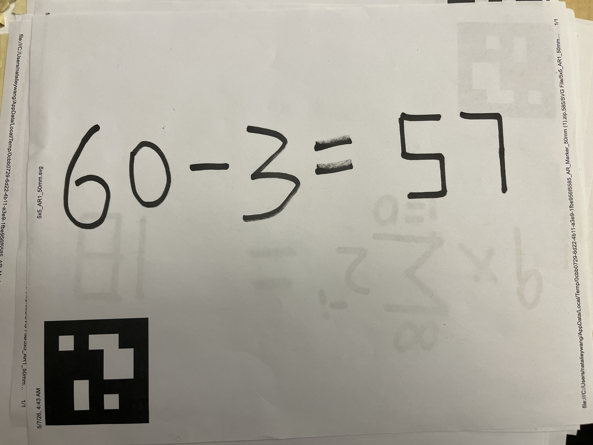
Figure 6.
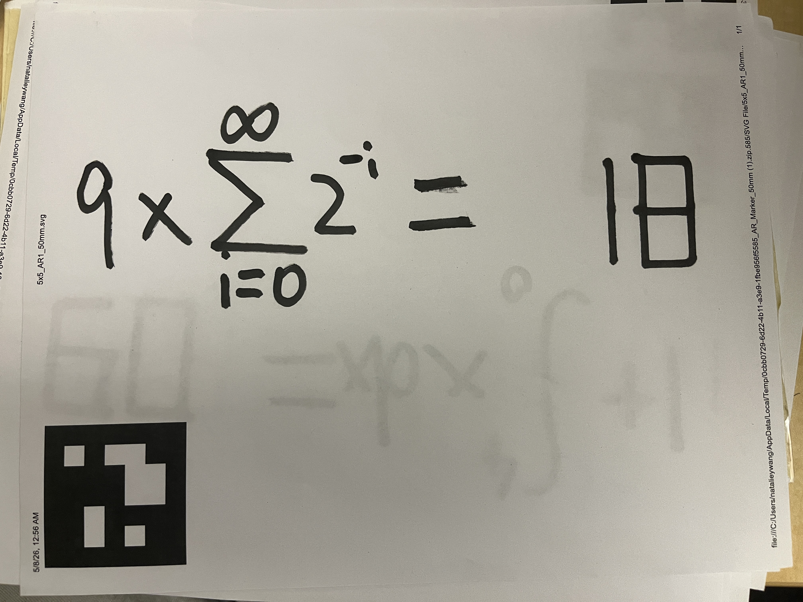
Figure 7.
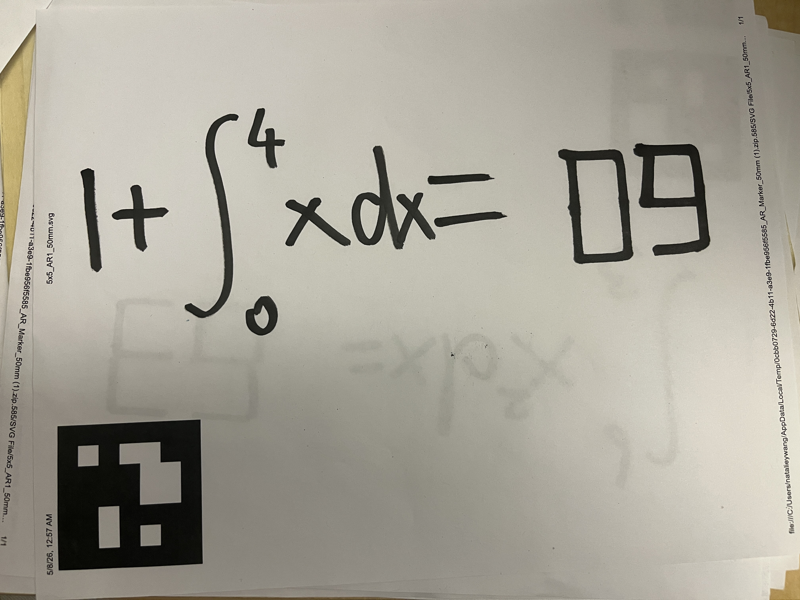
Figure 8.
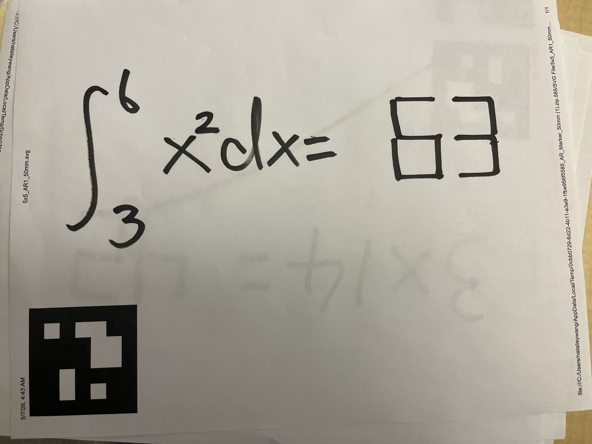
Figure 9.
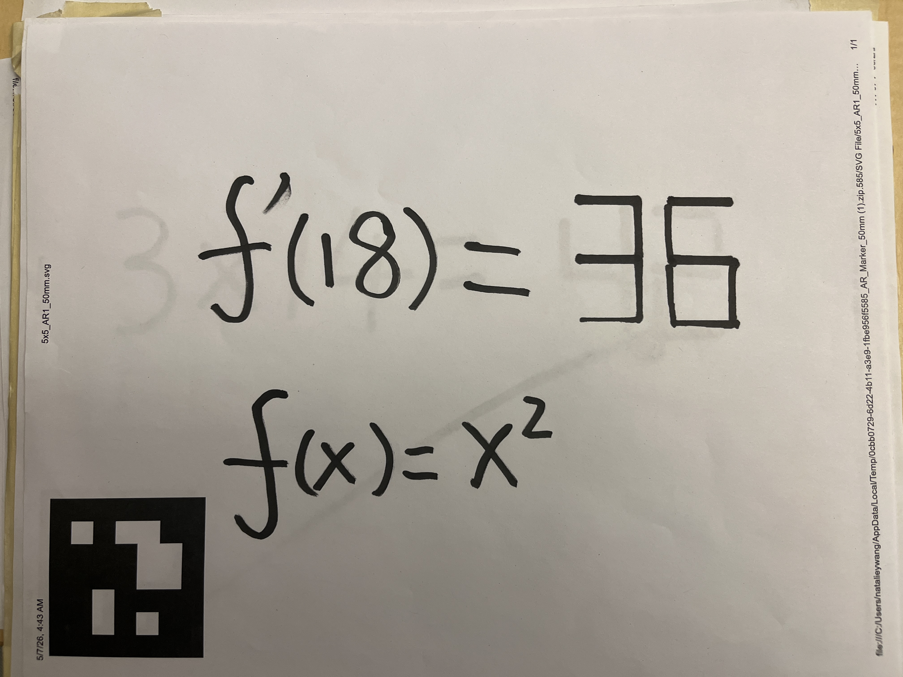
Figure 10.
5. Conclusion
How well did we meet our design criteria?
End-to-end autonomy. Met. A single command launches the
stack and the pipeline runs from camera capture to ink on the sheet
without manual intervention: process_pointcloud grabs the
RGB frame, the VLM returns a digit on /answer,
project_pipeline plans through MoveIt, and the UR7e writes
the result.
Position-tolerance. Mostly met. The answer sheet does
not need to be in a fixed location — the ArUco tag is detected
live and the writing pose is expressed in the sheet's frame, so the
sheet can be shifted or re-oriented on the table between runs. Marker
position tolerance is more limited: the center of the filtered point cloud may slightly drift from the marker, which may cause the pre-grasp pose to be incorrect, and therefore leading to the failure of the grasp. However, this is a rare case.
Safety. Met. Every motion goes through MoveIt's
/compute_ik and /plan_kinematic_path services
before execution, so joint-limit and self-collision checks run on
every waypoint. A planning failure aborts the run rather than
commanding the arm directly.
Difficulties
Re-orienting a flat marker risked collisions. If the
whiteboard marker was lying flat on the table, the gripper had to grasp
it and rotate it ~90° to a vertical writing pose, and the swing motion
may produce table collisions during MoveIt
planning. We solved this by 3D-printing a marker stand that holds the
marker upright on the table, so the gripper can approach a known
vertical pre-grasp pose directly and skip the re-orientation step.
Unstable z-offset against the writing surface. Small
errors in the camera-to-base transform and in the sheet's z-height made
the marker tip occasionally press too hard into the table or float
above the paper, which either stalled the controller or skipped strokes.
We solved this by 3D-printing a marker holder with a spring inside —
the spring absorbs vertical error, so the tip stays in
contact with the surface across a range of commanded z values without
jamming the arm.
Curved digits are hard to draw on a real surface.
Smoothly traced glyphs (the natural shape of handwritten 2, 3, 5, 6, 8,
9, 0) require many short waypoints and tight contact control. We simplified the alphabet by hard-coding each digit 0–9 as a small set of straight-line segments in the answer sheet frame.
Flaws, hacks, and what we'd do with more time
Answer-area offset is hard-coded. The position of the
answer area relative to the ArUco fiducial is a fixed offset baked into
project_main. If the answer area is re-printed at a
different position on the sheet, the offset has to be updated by hand.
With more time we'd detect the answer area directly (a second ArUco tag,
a printed bounding box, or a VLM call returning pixel coordinates we
then back-project into the sheet frame).
Limited symbol set. The system currently only writes
digits 0–9 as straight-line glyphs, so it can only answer questions
whose answer is an integer. A natural extension is to expand the
alphabet: operators (+, −, =),
decimal points, negative signs, and eventually letters by adding
more hard-coded stroke sequences or generating them from a font.
6. Team
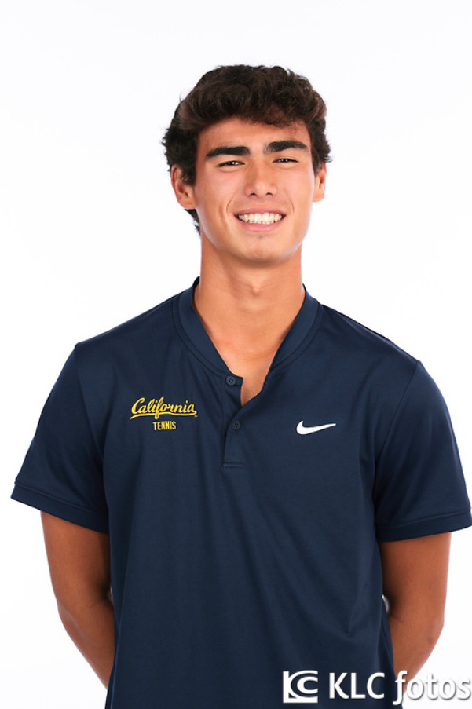
Alex Aney
Undergraduate in EECS and Math. Loves how robotics lets theory come to
life and builds things in his free time.
Contributions: Designed and hard-coded the straight-line stroke sequences for digits 0–9 in the answer sheet frame, tuned the writing waypoints so the marker tip traces legible glyphs.
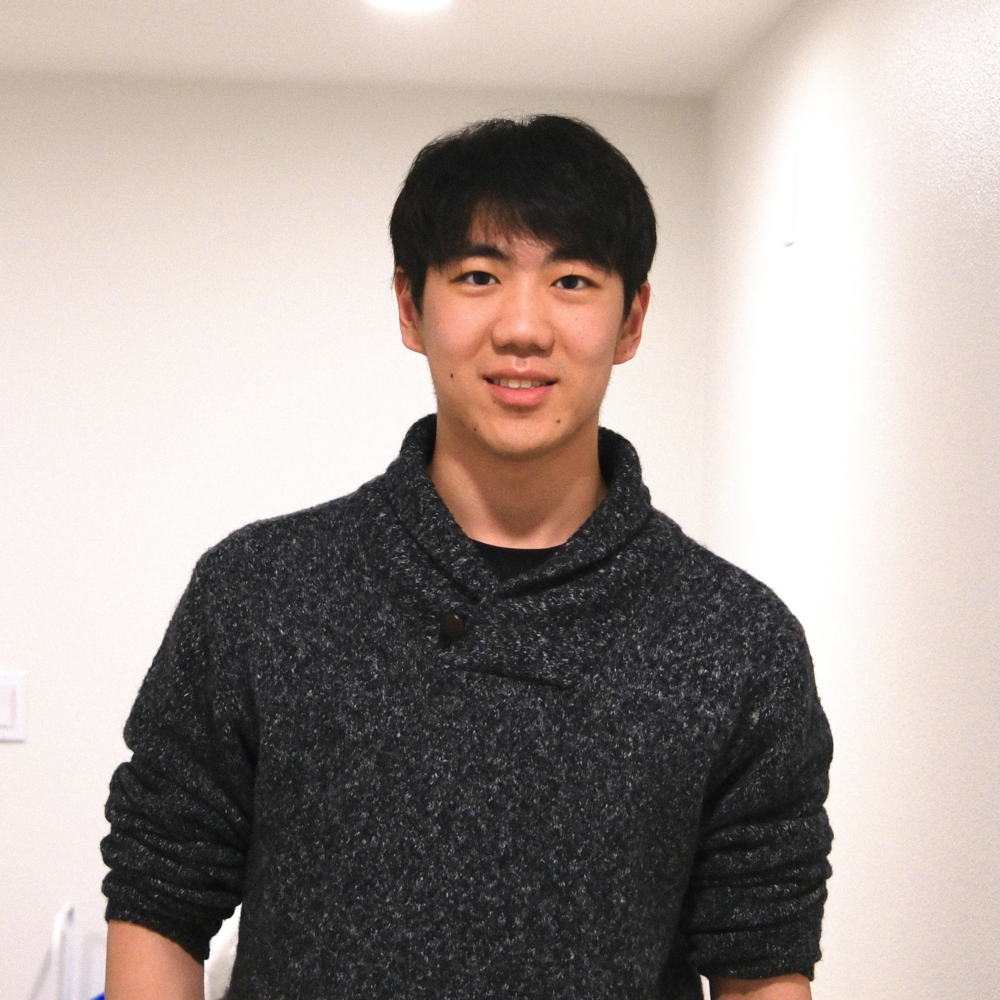
Shu Yuan
Senior in CS and Applied Mathematics. Researches LLM agents and
post-training, and is interested in applying deep learning to robotics.
Contributions: Integrated the vision-language model into the perception node — the RGB-to-equation prompt, the API call, and publishing the parsed result on /answer.
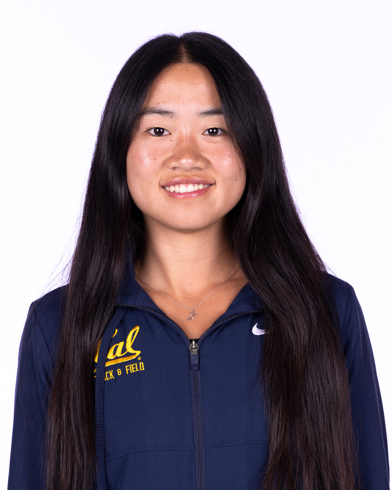
Natalie Wang
Second-year in Mechanical Engineering, interested in surgical robotics.
Contributions: Hardware mounting and 3D-printed parts: the spring-loaded marker holder that absorbs vertical error during writing.
Yolanda Wei
Undergraduate in ECE and Math, interested in applying robotics and ML
to societal problems.
Contributions: ArUco integration, camera-to-base calibration, and the visual_servoing orchestrator that ties perception, MoveIt planning, and trajectory execution into the end-to-end pipeline.